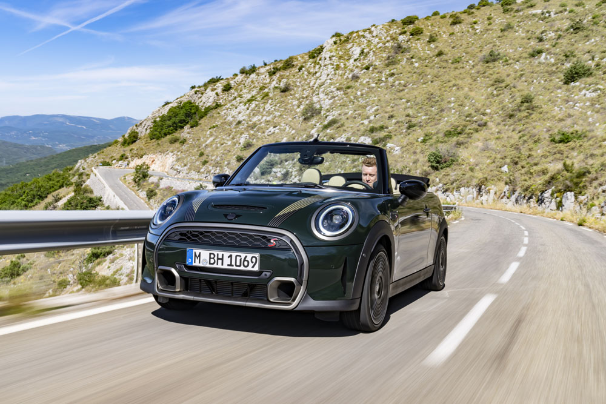

-
TOYOTA COROLLA
Es un automóvil del segmento C producido por el fabricante japonés de automóviles Toyota desde el año 1966. En 1997, el Corolla se convirtió en el automóvil más vendido del mundo, desplazando de dicho sitial al Volkswagen Escarabajo, superando en la actualidad las 50 millones de unidades vendidas
-
RENAULT STEPWAY
Sin duda uno de los modelos Renault más preferidos por los colombianos, el Renault Stepway 2022 sorprenderá con su nuevo diseño aventurero y por supuesto, un estilo único. La nueva versión del Renault Stepway 2022 recibió una renovación de plataforma, mejoras en tecnología, seguridad y equipamiento.
-
VOLKSWAGEN GOLF 8
Siempre te ha gustado ir por delante, atreverte con nuevas experiencias, vivir al máximo. Con el Golf 8, podrás disfrutar como nunca de la digitalización al volante y conducir lo más avanzado en tecnología híbrida. Emociónate con el compacto que ha cautivado generaciones.
-

CHEVROLET CAMARO
El Chevrolet Camaro es un automóvil deportivo de dos puertas, con motor delantero montado longitudinalmente y de tracción trasera, producido por el fabricante estadounidense Chevrolet, división de General Motors (GM) desde 1966.1 Compartía su plataforma y la mayoría de sus componentes con el Pontiac Firebird, también introducido en 1967.
-

HONDA CIVIC
Honda se caracteriza por estar siempre a la vanguardia con vehículos que incorporan diseño no solo exterior, a través de las entrelazadas y esculturales líneas que se fusionan suavemente para crear una forma perfecta en cada uno de los vehículos, sino también en su interior reforzando la filosofía M/M que se implementa siempre pensando en el bienestar y comodidad de quienes conducen un vehículo de la marca.
-

PORSHE 911
El Porsche 911 es un automóvil deportivo de lujo producido por el fabricante alemán Porsche AG, desde 1964. A través de los años, ha pasado por varias regeneraciones. De todas formas, muchas de las características del modelo original se conservan, como su configuración «todo atrás», su carrocería coupé fastback, el motor bóxer de seis cilindros y un interior con configuración 2+2 plazas.
-
JEEP WRANGLER
El Jeep Wrangler es un popular automóvil todoterreno fabricado por la compañía estadounidense FCA Group (Fiat Chrysler Automobiles) y vendido bajo la marca Jeep. Es el sucesor del Jeep CJ, la versión civil del Willys MB, un vehículo militar utilizado por el ejército de Estados Unidos en la Segunda Guerra Mundial.
-

TOYOTA 4RUNNER
El Toyota 4Runner es un vehículo SUV de tamaño medio fabricado por Toyota y se vende en todo el mundo desde 1984 hasta el presente. En Japón se conoce como la Toyota Hilux Surf. El 4Runner original era un todoterreno compacto y poco más que una camioneta Hilux equipado con un asiento trasero y techo de fibra de vidrio, pero el modelo ha experimentado un desarrollo significativo independiente en un cruce entre uno de tamaño compacto y un SUV de tamaño mediano (segmento F).
-
NISSAN FRONTIER NP300
Te presentamos la nueva generación de pick-ups Nissan Frontier equipadas con tecnología para conquistar cualquier obstáculo como un PRO.
-
FORD MUSTANG GT
Te permite controlar el volumen del rugido de tu Mustang. Sentirás su poder. Conoce más. Está diseñado para personalizarlo desde la manera que conduces hasta el último detalle. Tecnología Ecoboost®. Materiales Ecológicos. Seguridad y Confort. Modelos Exclusivos.
-

MINI COOPER S CABRIO
El MINI Cabrio, un espíritu libre perfeccionado, es la esencia del placer de conducir sin filtros y con la capota bajada. Experimenta el deleite de un descapotable que ofrece niveles soberbios de tecnología y manejo sencillo. Con cómodos asientos para cuatro pasajeros y una capota eléctrica suave 3 en 1, este vehículo está siempre listo para tu próxima aventura al aire libre. Además, con su motor TWIN Power Turbo capaz de alcanzar los 100 km/h en menos de 7 segundos, también está listo para aprovechar cada momento.
-
MERCEDES BENZ CLASE S
El Mercedes-Benz Clase S (Sonderklasse) es un automóvil de lujo del segmento F producido por el fabricante alemán Mercedes-Benz. Actualmente es el turismo más grande y lujoso de la gama. Comenzó a fabricarse desde mediados de los años 1950, y desde entonces es el sedán de lujo más vendido del mundo debido a su alta seguridad que le convierten en el sedán más seguro del mundo.